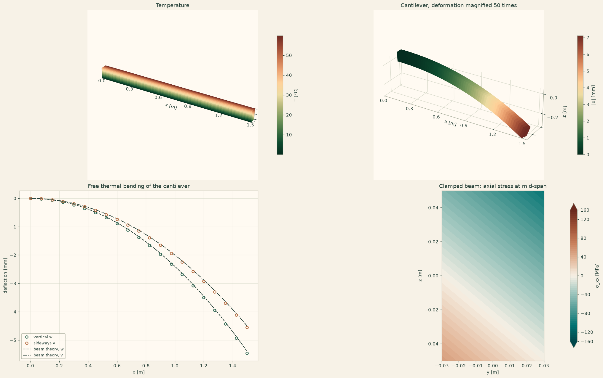
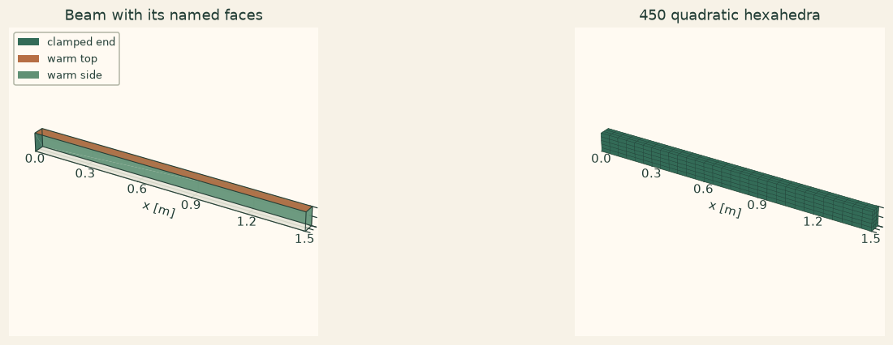

Docs › Examples › Thermally loaded beam
Thermal stress · 3D
Thermally loaded beam
A steel beam heated unevenly across its depth and its width, once as a free cantilever and once clamped at both ends.
Run locally with OneSimulation. The example downloads are free. Running them requires an activated runtime. OneSimulation 1.0 · CPython 3.13 on macOS (Apple Silicon), Ubuntu 22.04 (x86-64), and Windows x64. Installation and activation · View pilot plans. Scope of the reference checks.


What it computes
OneSimulation solves the temperature in the beam by heat conduction and passes it to the linear-elastic model as thermal strain through a field coupling, on quadratic hexahedra. The cantilever bends freely, the clamped beam carries the thermal stress. The script that builds the STEP file comes with the notebook.
What it checks
The cantilever tip moves 0.181, -4.56 and -5.46 mm against beam theory's 0.180, -4.50 and -5.40 mm (within 1.3 %) and stays stress-free; the axial stress of the clamped beam at mid-span matches -EαΔT within 1.6 % at the corners of the section.
Geometry
Save the STEP file thermally_loaded_beam.step next to the notebook before running it.


The geometry script
The script thermally_loaded_beam_geometry.py builds the geometry with the CAD objects of OneSimulation and writes the file. Change a dimension there, run it, and run the notebook again.
"""Geometry of the OneSimulation example "Thermally loaded beam".
Builds a steel beam, 1.5 m long with a 60 mm x 100 mm rectangular cross-section centred on the
x axis, with the CAD objects of OneSimulation and writes thermally_loaded_beam.step. The faces
keep their names x_min, x_max (the two ends), y_min, y_max (left and right) and z_min, z_max
(bottom and top).
"""
from onesim.cad.d3 import Box
length, breadth, depth = 1.5, 0.060, 0.100
beam = Box(
length=length, width=breadth, height=depth, origin=(0.0, -breadth / 2, -depth / 2)
)
beam.save("thermally_loaded_beam.step")The notebook
The complete notebook, cell by cell. Run it to produce the figures and the comparison printout.
A steel beam of length \(L=1.5\) m with a \(b\times h=60\times100\) mm cross-section is heated unevenly: the top face is 40 K warmer than the bottom face and the right face 20 K warmer than the left face, on top of a uniform rise of 10 K above the stress-free temperature \(T_0\):
A linear temperature field makes the thermal strain \(\alpha(T-T_0)\) a linear function of the position in the section, so the beam elongates and bends about both axes. Two supports are compared:
| case | supports | beam theory |
|---|---|---|
| cantilever | end \(x=0\) clamped | free curvatures \(\kappa_z=\alpha\Delta T_z/h\), \(\kappa_y=\alpha\Delta T_y/b\); tip displacements \(u=10\alpha L\), \(w=-\kappa_zL^2/2\), \(v=-\kappa_yL^2/2\) (the warm side becomes convex); no stress |
| clamped beam | both ends clamped | no displacement; axial stress \(\sigma_{xx}=-E\alpha(T-T_0)\) |
The beam comes from the CAD file thermally_loaded_beam.step with the face names x_min to z_max; the script thermally_loaded_beam_geometry.py builds it with the CAD objects of OneSimulation. Steel: \(E=210\) GPa, \(\nu=0.3\), \(\alpha=12\cdot10^{-6}\) 1/K.
Reference. B. A. Boley and J. H. Weiner, Theory of Thermal Stresses, Wiley (1960), Sec. 9.2 (thermal bending of beams); S. Timoshenko and J. N. Goodier, Theory of Elasticity, 3rd ed., McGraw-Hill (1970), §150.
import numpy as np
from onesim.cad.d2 import Plane
from onesim.cad.exchange import load
from onesim.materials import IsotropicSolid
from onesim.meshing import CadHexahedralMesher
from onesim.numerics import Numerics
from onesim.numerics.fem import FiniteElement, Lagrange
from onesim.numerics.field_transfer import FiniteElementEvaluation
from onesim.numerics.linear import SparseDirect
from onesim.physics.heat_transfer import FixedTemperature, HeatConduction
from onesim.physics.solid_mechanics import (
FixedDisplacement,
IsotropicThermalExpansion,
LinearElasticity,
TractionFree,
)
from onesim.simulation import Problem, Simulation
from onesim.simulation.field_connections import FieldCoupling
from onesim.visualization import plots, theme
theme.set()Geometry and mesh
beam = load("thermally_loaded_beam.step")
faces = beam.boundaries
length, breadth, depth = beam.size
mesh = CadHexahedralMesher(cells=(30, 3, 5)).generate(beam)
view = plots.Camera(elevation=28, azimuth=-58)
fig = plots.figure(1, 2, size=(15, 4.5))
plots.geometry(
beam,
selection={
"clamped end": faces.x_min,
"warm top": faces.z_max,
"warm side": faces.y_max,
},
labels=False,
camera=view,
title="Beam with its named faces",
ax=fig[0],
)
plots.mesh(
mesh,
groups=("all",),
legend=False,
camera=view,
title=f"{mesh.cell_count} quadratic hexahedra",
ax=fig[1],
)
plots.show()Temperature
The linear temperature is prescribed on the surface of the beam; heat conduction carries it into the volume.
reference, mean, across_depth, across_width = 293.15, 10.0, 40.0, 20.0
steel = IsotropicSolid(
density=7850.0,
specific_heat_capacity=460.0,
thermal_conductivity=45.0,
youngs_modulus=210e9,
poisson_ratio=0.3,
thermal_expansion_coefficient=12e-6,
)
numerics = Numerics(
spatial=FiniteElement(element=Lagrange(order=2)), linear_solver=SparseDirect()
)
heat = HeatConduction(domain=beam.volume, material=steel)
heated = Simulation(
problem=Problem(
name="Temperature of the beam",
geometry=beam,
physics=(heat,),
boundary_conditions=(
FixedTemperature(
boundary=faces.all,
physics=heat,
value=lambda x, y, z: reference
+ mean
+ across_depth * z / depth
+ across_width * y / breadth,
),
),
),
mesh=mesh,
numerics=numerics,
).solve_stationary()Two support cases
The temperature enters the elastic model as thermal strain through a field coupling. The cantilever is clamped at \(x=0\), the clamped beam at both ends.
solid = LinearElasticity(
domain=beam.volume,
material=steel,
thermal_strain=IsotropicThermalExpansion(reference_temperature=reference),
)
supports = {"cantilever": faces.x_min, "clamped beam": faces.x_min | faces.x_max}
results = {
case: Simulation(
problem=Problem(
name=case,
geometry=beam,
physics=(solid,),
boundary_conditions=(
FixedDisplacement(boundary=fixed, physics=solid, value=(0.0, 0.0, 0.0)),
TractionFree(boundary=faces.all - fixed, physics=solid),
),
couplings=(
FieldCoupling(
source=heated.field(heat.temperature),
target=solid.temperature,
transfer=FiniteElementEvaluation(),
),
),
),
mesh=mesh,
numerics=numerics,
).solve_stationary()
for case, fixed in supports.items()
}Results
The tip displacement of the cantilever and its stress at mid-span against the free thermal bending of beam theory, and the axial stress at mid-span of the clamped beam against \(-E\alpha(T-T_0)\) at the four corners and the centre of the section.
alpha, modulus = 12e-6, 210e9
tip = results["cantilever"].field(solid.displacement).evaluate([[length, 0.0, 0.0]])[0]
theory = (
alpha * mean * length,
-alpha * across_width / breadth * length**2 / 2,
-alpha * across_depth / depth * length**2 / 2,
)
for label, value, expected in zip(("axial u", "sideways v", "vertical w"), tip, theory):
print(
f"cantilever tip, {label:10s}: simulation {1e3 * value:8.4f} mm, beam theory {1e3 * expected:8.4f} mm, "
f"deviation {100 * (value / expected - 1):+.2f} %"
)
section = np.array(
[
[length / 2, y, z]
for y in (-breadth / 2, breadth / 2)
for z in (-depth / 2, depth / 2)
]
+ [[length / 2, 0.0, 0.0]]
)
print(
f"cantilever, largest |σ_xx| in the mid-span section: "
f"{np.abs(results['cantilever'].field(solid.stress).evaluate(section)[:, 0]).max() / 1e6:.4f} MPa (beam theory: 0)"
)
clamped = results["clamped beam"].field(solid.stress).evaluate(section)[:, 0]
expected = (
-modulus
* alpha
* (
mean
+ across_depth * section[:, 2] / depth
+ across_width * section[:, 1] / breadth
)
)
print(
"clamped beam, σ_xx at mid-span y [mm] z [mm] simulation [MPa] -Eα(T-T0) [MPa]"
)
for (x, y, z), value, target in zip(section, clamped, expected):
print(
f"{'':32s} {1e3 * y:6.0f} {1e3 * z:8.0f} {value / 1e6:18.2f} {target / 1e6:17.2f}"
)Figure
The temperature on the beam, the deformed cantilever (displacement magnified 50 times), the deflection along the cantilever against the parabola of free thermal bending, and the axial stress across the mid-span section of the clamped beam.
x = np.linspace(0.0, length, 61)
line = (
results["cantilever"]
.field(solid.displacement)
.evaluate(np.column_stack((x, 0 * x, 0 * x)))
)
z = np.linspace(-depth / 2, depth / 2, 21)
celsius = lambda t, position: t - 273.15
fig = plots.figure(2, 2, size=(16, 10))
plots.surface(
heated.field(heat.temperature),
component=celsius,
camera=view,
label="T [°C]",
title="Temperature",
ax=fig[0],
)
plots.surface(
results["cantilever"].field(solid.displacement),
component=lambda u, position: 1e3 * np.linalg.norm(u, axis=1),
deformation=results["cantilever"].field(solid.displacement),
deformation_scale=50.0,
camera=view,
label="|u| [mm]",
title="Cantilever, deformation magnified 50 times",
ax=fig[1],
)
plots.line(
points={
"vertical w": (x[::3], 1e3 * line[::3, 2]),
"sideways v": (x[::3], 1e3 * line[::3, 1]),
},
reference={
"beam theory, w": (x, -1e3 * alpha * across_depth / depth * x**2 / 2),
"beam theory, v": (x, -1e3 * alpha * across_width / breadth * x**2 / 2),
},
xlabel="x [m]",
ylabel="deflection [mm]",
title="Free thermal bending of the cantilever",
legend="lower left",
ax=fig[2],
)
plots.section(
results["clamped beam"].field(solid.stress),
plane=Plane(origin=(length / 2, 0, 0), normal=(1, 0, 0)),
component=lambda s, position: s[:, 0] / 1e6,
colormap="diverging",
limits=(-140, 140),
subdivisions=3,
label="σ_xx [MPa]",
title="Clamped beam: axial stress at mid-span",
ax=fig[3],
)
plots.show()Going further
Replace the linear temperature by the solution of a real heat-transfer problem, for example a beam heated by convection on one face, or support the cantilever by a spring at its tip and follow how the thermal stress grows with the stiffness of the spring.